Contents
- 1. Methodology
- 2. Architecture & data flow
- 3. Data dictionary
- 4. Deployment
- 5. Demo script
Companion reports: EDA_Report.pdf (20 analyses) and Model_Evaluation_Report.pdf (metrics, charts, MLflow evidence), both in reports/.
Methodology, Assumptions & Limitations
1. Questions answered
- Is this listing priced below comparable properties? A relative-value classification.
- What could it be worth in five years under stated assumptions? A scenario valuation.
PropWise does not claim to predict investment profitability. The dataset contains no resale prices, rents, returns or dates, so profitability cannot be learned or validated.
2. Good-value classification
Rule (the label): good_value = 1 when ₹/sqft ≤ 1.0 × the training-split median ₹/sqft of the property's
City × Property_Type × BHK cohort.
- 630 cohorts, each with at least 165 training listings. If a cohort is ever smaller than 30 rows, the city median is used, then the global median.
- The median threshold gives a balanced label (≈50% positive), so accuracy is meaningful and no resampling is needed.
- Cohort medians are computed on the 70% training split only and then applied to validation (15%), test (15%) and user inputs. The split is random and stratified by city: rows are independent listings with no repeats and no time index, so group- or time-aware validation is not required.
Models. Logistic Regression (scaled), Random Forest and XGBoost, each in a pipeline:
build_model_frame → [impute (+scale) | impute + one-hot] → model. Two input tracks:
| Track | Inputs | Purpose |
|---|---|---|
| Listing | Every field incl. asking price | The app's model; measures rule reproduction |
| Attributes only | Every field except price | Measures what is learnable without the price |
The cohort median is never an input. Selection: highest validation ROC-AUC on the listing track; ties within 0.001 are broken by lower Brier score. Result: XGBoost, test ROC-AUC 0.9991, F1 0.984, ECE 0.0031.
How to read this. The label is arithmetic on price and area, so ≈0.999 AUC means "the model learned the rule". It is not skill at picking investments. The attributes-only track reaches ≈0.78 AUC, driven almost entirely by area: because price is independent of area here, bigger homes have lower ₹/sqft.
In the app the verdict is the exact rule. The model probability is shown only because test calibration error is below 0.03, and any disagreement between rule and model is flagged as borderline.
Explanations. Factors come from the rule decomposition (gap to cohort median, gap to city median, cohort percentile). Global permutation importance shows what the model uses, not what causes prices. Context items (construction status, age, transport, amenities) are shown but not used in the verdict.
3. Five-year valuation
Future value = current asking price × (1 + r)^5
| Scenario | r | 5-year multiple |
|---|---|---|
| Conservative | 2% | ×1.104 |
| Baseline | 4% | ×1.217 |
| Optimistic | 6% | ×1.338 |
Sources for the defaults: - RBI All-India House Price Index, Q1 2026-27 (released 24 Aug 2026): 3.6% YoY - NHB RESIDEX, Q3 FY2025-26: 50-city HPI at assessment prices, 5.0% YoY
The baseline sits between these two readings and the other scenarios bracket it by ±2 points. These are recent single readings of national indices, not forecasts. City-level readings vary widely (NHB, Dec 2025: −8.9% to +22.8%), so city-specific rates were deliberately not extrapolated over five years. Users can set any rate from −5% to 15%.
Excluded: stamp duty and registration, brokerage, maintenance, property tax, insurance, rental income, vacancy, loan costs, inflation (figures are nominal) and capital-gains tax. A projected gain is not a net return.
Why not a regression forecast? A supervised five-year model needs observed future prices. Generating labels with a growth formula and then "predicting" them would only re-learn the formula while reporting meaningless accuracy. Instead, regressors were trained on current price from attributes (the valuation signal test). All score R² ≈ 0, and the comparable-median rule scores R² ≈ −0.74. These results are logged in MLflow and shown in the app.
4. Data handling
- Validation separates errors (missing columns, empty data, wrong types, non-positive price or size) from warnings (unknown categories, out-of-range values, internal inconsistencies).
- Inconsistent records are kept and flagged rather than deleted, because the wrong field cannot be identified.
- Price-per-sqft outliers (7.9% above the IQR fence) are genuine small homes and are kept. Medians and tree models are robust to them.
- Imputers stay in the pipeline even though there are no missing values, so future data with gaps still works.
5. Limitations
- The data appears synthetic, so no conclusion transfers to real Indian housing markets.
- No time dimension: no trends, seasonality or momentum.
- Locality IDs are anonymised and have about 12 rows each, too few for locality benchmarks.
- Legal title, RERA registration, builder track record, crime, infrastructure pipeline and micro-location are not captured.
- Out-of-range inputs (e.g. > 5,000 sqft) are allowed but flagged as extrapolation.
6. Financial disclaimer
PropWise AI is an educational analytics project. It is not investment, legal or tax advice, and it makes no guarantee of returns. Verify any real property independently and consult a registered adviser before buying.
Architecture & Data Flow
Overview

Layers
| Layer | Module | Responsibility |
|---|---|---|
| Config | src/utils/config.py |
Every path, constant and assumption (rates, cohort keys, thresholds, sources). Paths can be overridden by environment variables. |
| Data | src/data/validate_data.py |
Errors (unusable data) vs warnings (inconsistent records). Returns a ValidationReport. |
src/data/load_data.py |
Load, clean (₹/sqft recomputed, amenities parsed, flags added), fingerprint, write parquet. | |
| Features | src/features/engineering.py |
build_model_frame() is the single transform used by training and inference. CohortStats holds training-only medians with City → global fallback. |
| Models | target.py |
The documented good-value rule. |
classification.py |
Splits, candidate models, the two feature tracks, raw-input pipelines, grouped permutation importance. | |
regression.py |
Valuation signal test (price from attributes; price never enters as input). | |
scenario.py |
Compounding scenarios with validated rates. | |
inference.py |
load_bundle, validate_property (blocking errors + out-of-distribution warnings), analyze_property. |
|
| Evaluation | src/evaluation/metrics.py |
Classification/regression metrics, ECE, ROC/calibration curves. |
| Viz | src/visualization/charts.py |
Plotly template and charts shared by the EDA report and the app. Aggregates before plotting. |
| UI | src/ui/ |
Design tokens and CSS, escaped HTML components, cached loaders, session helpers. |
| App | app.py, views/*.py |
Navigation and six pages. Pages never train models. |
Key design decisions
- Feature engineering lives inside the saved pipeline (
FunctionTransformer(build_model_frame)), so the artefact accepts raw-schema rows and replays exactly the training transforms. A test confirms that the batch path and the single-record path give identical probabilities. - Leakage control. Cohort medians are fitted on the training split only. The median itself is never a model input. Test data never influences selection.
- Honest targets. No synthetic future-price labels are created. Five-year values come from scenarios.
- MLflow is optional at runtime. Training logs to a local SQLite store and registers the champion
(
@championalias). The app reads the smallmodels/bundle, whose run IDs link back to MLflow, so it deploys without an MLflow server.scripts/evaluate_models.pycross-checks bundle metrics against MLflow. - Portable model files. The XGBoost champion is saved with XGBoost's own
save_modelJSON format (models/classifier_xgb.json) next to a joblib file holding only the scikit-learn steps (src/models/persistence.py). A pickled booster written on Linux failed to load on Windows ("input stream corrupted") even with identical library versions; the JSON format is XGBoost's supported cross-platform format. - Safe model logging. Models are logged with MLflow's
skopsformat, an explicit trusted-types list andcode_paths=["src"]so the logged model is self-contained. - Theming through config first.
.streamlit/config.tomlsets colours, fonts, radii, borders and the sidebar. Custom CSS targets only our ownpw-*classes plus two stabledata-testidhooks. - Charts never ship raw rows. Distributions are pre-binned, boxes use precomputed quantiles, and the scatter is sampled, so pages stay fast on 250k rows.
Runtime behaviour
st.cache_datacaches the parquet;st.cache_resourcecaches the model bundle.- Missing data or models produce an actionable error and stop the page instead of crashing.
- Session state holds recent analyses (max 10) and the comparison list (max 4). Nothing is persisted server-side, and the dashboard labels these as session-only.
Data Dictionary
Source: india_housing_prices.csv: 250,000 rows, 23 columns, no missing values, no duplicate rows.
Observed values come from profiling (data/processed/data_quality_report.json, reports/eda_stats.json).
Raw fields
| Field | Type | Meaning | Observed values | Notes |
|---|---|---|---|---|
| ID | int | Unique listing identifier | 1 – 250,000 | Unique |
| State | text | Indian state / UT | 20 values | Each city maps to exactly one state |
| City | text | City | 42 values, ≈6,000 rows each | Model input; cohort key |
| Locality | text | Anonymised neighbourhood ID | Locality_1 … Locality_500 |
The same ID appears in every city. The real unit is City + Locality (20,999 pairs, ≈12 rows each). Not a model input. |
| Property_Type | text | Dwelling type | Apartment, Independent House, Villa (≈⅓ each) | Cohort key |
| BHK | int | Bedrooms (bedroom-hall-kitchen count) | 1 – 5, uniform | Cohort key. Not linked to size (44.5% of 1-BHK listings exceed 3,000 sqft). |
| Size_in_SqFt | int | Built-up area | 500 – 5,000, uniform | |
| Price_in_Lakhs | float | Asking price in lakhs (1 lakh = ₹100,000) | 10 – 500, uniform | Asking, not transaction, price |
| Price_per_SqFt | float | Price ÷ area in lakhs/sqft, rounded to 2 dp | 0.00 – 0.99 | 2,534 rows round to 0.00, so it is recomputed in ₹ |
| Year_Built | int | Construction year | 1990 – 2023 | |
| Furnished_Status | text | Furnishing level | Furnished, Semi-furnished, Unfurnished | |
| Floor_No | int | Floor of the unit (0 = ground) | 0 – 30 | Above Total_Floors in 46.5% of rows |
| Total_Floors | int | Floors in the building | 1 – 30 | Villas/houses with > 4 floors: 57.9% |
| Age_of_Property | int | Years since construction | 2 – 35 | Exactly 2025 − Year_Built, so the reference year is 2025 |
| Nearby_Schools | int | Nearby schools (count or score, not specified) | 1 – 10 | |
| Nearby_Hospitals | int | Nearby hospitals (count or score) | 1 – 10 | |
| Public_Transport_Accessibility | text | Transport access | Low, Medium, High | |
| Parking_Space | text | Parking available | Yes, No | Number of spaces not recorded |
| Security | text | Security features present | Yes, No | |
| Amenities | text | Comma-separated amenity list | 325 strings = 31 sets of {Clubhouse, Garden, Gym, Playground, Pool} | Order varies, so it is parsed into flags |
| Facing | text | Direction the unit faces | East, North, South, West | |
| Owner_Type | text | Who lists the property | Owner, Builder, Broker | |
| Availability_Status | text | Construction status | Ready_to_Move, Under_Construction | 45.6% of rows are "under construction" yet built ≤ 2020 |
Engineered fields (clean() / build_model_frame())
| Field | Definition | Used by |
|---|---|---|
| Price_INR | Price_in_Lakhs × 100,000 | EDA, UI |
| Price_per_SqFt_INR | Price_INR ÷ Size_in_SqFt | Label, EDA, UI |
| has_clubhouse … has_pool | 1 if the amenity is listed | Models, EDA |
| amenity_count | Number of amenities (0–5) | Models, UI |
| Age_Years | 2025 − Year_Built | Models |
| Size_Band | <1,000 / 1,000–2,000 / … / 4,000+ sqft | EDA, UI |
| SqFt_per_BHK | Size ÷ BHK | Models |
| Floor_Position | Floor_No ÷ Total_Floors (NaN when floor > total) | Descriptive |
| Transport_Score | Low 0 · Medium 0.5 · High 1 | Descriptive |
| Infrastructure_Index | Mean of scaled schools, hospitals, transport (0–1). Equal weights are an assumption. | Descriptive only |
| log_price, log_size | Natural logs (make the ₹/sqft ratio linear for Logistic Regression) | Listing-track models |
| flag_floor_above_total, flag_uc_old_build, flag_house_many_floors, n_quality_flags | Consistency flags | UI listings table |
Benchmark & label (fitted on training split only)
| Field | Definition |
|---|---|
| benchmark_pps | Training median ₹/sqft of the City × Property_Type × BHK cohort (≥ 30 rows; else City, then global median) |
| cohort_n | Training rows in the cohort (min 165 in the full data) |
| good_value | 1 if Price_per_SqFt_INR ≤ benchmark_pps, else 0 |
Fields mentioned in the brief but not in the data
Crime rate, RERA status, infrastructure score and historical appreciation are absent and were not invented.
Deployment Guide
1. What the deployed app needs
| Needed at runtime | Size | In git? |
|---|---|---|
app.py, views/, src/, assets/, .streamlit/config.toml |
small | yes |
data/processed/housing_clean.parquet |
≈9 MB | yes (the app reads this, not the CSV) |
data/processed/data_quality_report.json |
2 KB | yes |
models/ (classifier.joblib, classifier_xgb.json, cohort_stats.joblib, metadata.json, evaluation.json) |
≈2.9 MB | yes |
requirements.txt |
— | yes |
Not committed (see .gitignore): data/raw/* (the 41 MB CSV and any archive of it; regenerable input),
mlflow.db and mlartifacts/ (≈45 MB local tracking store), .venv/, .streamlit/secrets.toml.
Everything committed is far below GitHub's 100 MB per-file limit, so Git LFS is not needed.
If you later need to share the raw CSV or MLflow artefacts, use a GitHub Release asset, Google Drive or an object store (S3, GCS, Azure Blob), not the repository.
2. GitHub setup (Windows PowerShell)
cd C:\Labmentix\real-estate-investment-advisor
git init
git add .
git status # confirm: no .venv, no data/raw/*.csv, no mlflow.db
git commit -m "PropWise AI: real estate investment advisor"
git branch -M main
# Create an empty repo on github.com (no README), then:
git remote add origin https://github.com/<your-username>/real-estate-investment-advisor.git
git push -u origin main
3. Streamlit Community Cloud
- Go to https://share.streamlit.io and sign in with GitHub.
- Create app → choose the repository, branch
main, main fileapp.py. - Advanced settings → Python version: 3.13 (the version the bundle was trained with; pickled scikit-learn/XGBoost models are safest on the same Python and library versions).
- Deploy. The first build installs
requirements.txt(a few minutes).
No secrets are required. If you add any (e.g. a remote MLflow URI), put them in the app's Secrets panel, never in git:
# .streamlit/secrets.toml (local only, git-ignored)
MLFLOW_TRACKING_URI = "https://your-mlflow-server"
src/utils/config.py reads paths from environment variables (PROPWISE_MODELS_DIR, PROPWISE_PROCESSED_DATA,
PROPWISE_RAW_DATA, MLFLOW_TRACKING_URI), so the code never hard-codes machine-specific paths.
Other hosts
Any host that can run streamlit run app.py --server.port $PORT --server.address 0.0.0.0 works (Render,
Railway, Hugging Face Spaces with the Streamlit SDK, a VM). Install with pip install -r requirements.txt.
4. MLflow
- Local (default): training writes to
sqlite:///mlflow.dbwith artefacts inmlartifacts/. Browse with:bash mlflow ui --backend-store-uri sqlite:///mlflow.db --port 5000Experiments:propwise-investment-classification,propwise-valuation-signal-test. Registered model:propwise-investment-classifierwith alias@champion. - Load the registered model elsewhere:
python import mlflow mlflow.set_tracking_uri("sqlite:///mlflow.db") model = mlflow.pyfunc.load_model("models:/propwise-investment-classifier@champion") - Remote server: set
MLFLOW_TRACKING_URIbeforepython -m scripts.train_models. - In the cloud app: MLflow is not installed or needed. The app reads
models/, and Model Insights shows the run IDs and registry version recorded at training time.
5. Updating the model
python -m scripts.run_pipeline # retrain, re-register (new version → @champion), rewrite models/
pytest
git add models data/processed reports
git commit -m "Retrain models" && git push # Streamlit Cloud redeploys automatically
6. Common failures
| Symptom | Cause | Fix |
|---|---|---|
| "Dataset unavailable … housing_clean.parquet" | Parquet not committed or path changed | Run python -m scripts.prepare_data and commit data/processed/ |
| "Models unavailable … Run scripts.train_models" | models/ missing |
Train locally and commit models/ |
ModuleNotFoundError: src |
App started from another folder | Run streamlit run app.py from the project root (Cloud does this automatically) |
Unpickling / AttributeError loading classifier.joblib |
Different scikit-learn/XGBoost version | Keep requirements.txt pins; retrain after upgrading libraries |
XGBoostError: input stream corrupted |
An XGBoost model pickled on another OS (old bundle format) | Pull the current models/ folder (XGBoost stored as classifier_xgb.json) or run python -m scripts.train_models |
Build fails on pandas==3.1.0 |
Python < 3.11 selected | Choose Python 3.13 in Advanced settings |
Activate.ps1 cannot be loaded (Windows) |
Execution policy | Set-ExecutionPolicy -Scope CurrentUser RemoteSigned |
streamlit not recognised |
venv not active | Activate .venv or run python -m streamlit run app.py |
| MLflow "untrusted types" error when logging | skops safety check | The trusted list lives in scripts/train_models.py (SKOPS_TRUSTED); only add types you created |
| Port 8501 busy | Another Streamlit running | streamlit run app.py --server.port 8502 |
| App slow on first load | Parquet + bundle loading | Cached after the first load (st.cache_data / st.cache_resource) |
Demo Script (6–8 minutes)
Setup: app running (streamlit run app.py), MLflow UI in a second tab
(mlflow ui --backend-store-uri sqlite:///mlflow.db), reports/EDA_Report.pdf open in a third.
1. Hook — 30 s · Executive Dashboard
"PropWise AI answers two questions an investor asks about a listing: is it priced well against similar homes, and what might it be worth in five years? The rule I followed was that every number has to be traceable, either to the data or to a cited source."
Point at the KPI row: 250,000 listings, 42 cities, 630 comparable cohorts.
2. The finding that shaped everything — 75 s · Dashboard → EDA report
"Before modelling, I profiled the data. It's clean, with no missing values or duplicates, but price is unrelated to size, location, amenities or transport. Every correlation is below 0.01."
Show EDA §4 (size vs price, r ≈ 0) and §10 (top localities match a random shuffle).
"I also found internal contradictions: 46% of rows have a floor number above the building height. So the data looks synthetic. Instead of hiding that, I designed the product around it."
3. Analyze a property — 90 s · Investment Analyzer
Use the defaults (3 BHK apartment, Bangalore, 1,800 sqft, ₹140 L). Click Analyze property.
"The verdict is relative value: ₹7,778 per sqft against a comparable median of ₹9,537, which is 18% below. Comparables are the same city, type and BHK, using medians from the training split only."
- Value vs comparables: the listing's position in the cohort distribution. The "implied price" is labelled as not a valuation because it scores R² −0.74.
- Five-year scenarios: 2 / 4 / 6% bracket the latest RBI (3.6%) and NHB (5.0%) indices. Open the assumptions panel to show they are editable. Point out the list of excluded costs.
- Factors and Limitations: rule-based factors, context items kept out of the verdict, and plain-language caveats.
Then change the size to 9,000 sqft and show the extrapolation warning.
4. Compare — 45 s · Property Comparison
Add IDs 1, 2, 3. Show the highlighted table and the shared growth slider.
"There's deliberately no 'winner'. With identical growth rates, projected gains just scale with price. The real difference is each listing against its own comparables."
5. Model honesty — 90 s · Model Insights
"I trained Logistic Regression, Random Forest and XGBoost, tracked in MLflow. The champion hits 0.999 AUC, and I state openly that this is expected: the label is a rule on price and area, so the model is reproducing it. To show what is actually learnable, the attributes-only track removes price and lands at 0.78, almost entirely from area."
Show calibration (ECE 0.003, which is why a probability is displayed), the confusion matrix and permutation importance. Switch to the Valuation signal test: four regressors at R² ≈ 0.
"That's why there is no fake 'predicted price' and no fabricated five-year labels."
Switch to the MLflow UI tab: two experiments, 11 runs, registered model @champion.
6. Engineering — 45 s
- One
build_model_frame()inside the saved pipeline, so training and inference match (a test enforces it). - 65 pytest tests, including headless runs of every page.
scripts.run_pipelinereproduces everything from the raw CSV. The deployed app needs only a ≈2.9 MB model bundle, stored in portable formats.
7. Close — 20 s
"With real transaction histories, the same architecture becomes a genuine forecaster: swap the scenario engine for a time-validated model and the cohort rule for realised returns. Until then, PropWise is honest about what the data can and can't say."
Likely questions - Why not predict the five-year price with XGBoost? There are no future prices to learn from or validate against. - Isn't 0.999 AUC suspicious? Yes, which is why it's labelled as rule reproduction and paired with the attributes-only track. - Why the median as the threshold? It's robust to the ₹/sqft right tail and yields balanced classes. - Why 4% baseline? It sits between RBI 3.6% and NHB 5.0%, and users can change it.